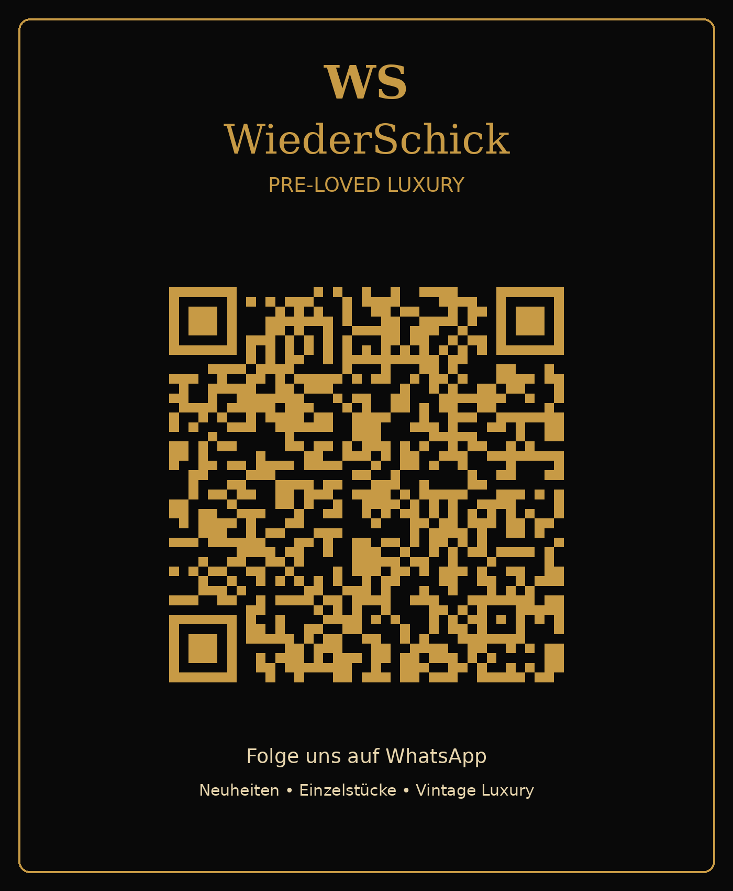

Neu eingetroffen
Designer Bags
Besondere Modelle mit Charakter.
WiederSchick
Wir verkaufen und kaufen ausgewählte Pre-Loved Fashion, Designer-Taschen, Schuhe, Accessoires und besondere Vintage-Stücke. Nicht beliebig. Nicht massenhaft. Sondern mit Stil, Charakter und einem zweiten Leben.
Authentisch. Zeitlos. Besonders.
Neu bei WiederSchick
Hier können später direkt deine neuesten Taschen, Kleidungsstücke, Schuhe und Accessoires erscheinen.
Besondere Modelle mit Charakter.
Ausgewählte Styles statt Massenware.
Kleine Details mit großer Wirkung.
Folge unserem WhatsApp-Kanal für neue Einzelstücke, besondere Funde und Pre-Loved Highlights.
